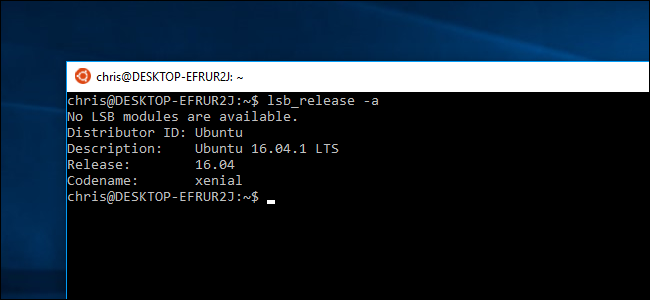
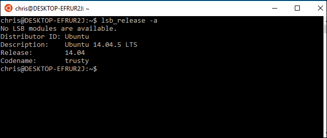
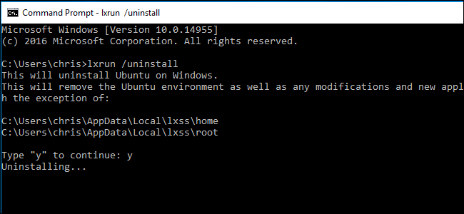
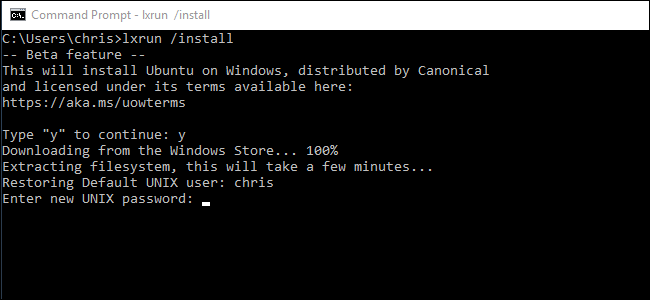
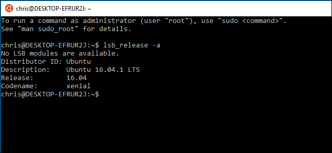
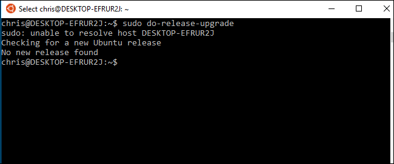

How-To Geek
How to Update the Windows Bash Shell to Ubuntu 16.04

Starting with the Windows 10 Creators Update, which comes out this spring, anyone who installs the Bash environment will get Ubuntu 16.04 (Xenial). But, if you’ve previously installed Bash in the Anniversary Update, you’ll be stuck with Ubuntu 14.04 (Trusty) until you manually upgrade.
Ubuntu 16.04 contains more modern, up-to-date software packages. Ubuntu 14.04 was originally released in April, 2014, while Ubuntu 16.04 was released in April, 2016.
![]()
Ubuntu 16.04 Requires the Creators Update
Using Ubuntu 16.04 in Windows 10’s Bash shell requires the Creators Update, which is only available in Insider Preview form at the moment.
While you can go out of your way to forcibly upgrade the Ubuntu shell to 16.04 on Windows 10’s Anniversary Update, it’s not a good idea. The underlying Windows Subsystem for Linux doesn’t fully support Ubuntu 16.04 in the Anniversary Update, so some things just won’t work properly.
In the Creators Update, the Windows Subsystem for Linux has been updated to support Ubuntu 16.04. If you haven’t installed Bash yet, you’ll get Ubuntu 16.04 when you do. If you previously installed Bash, Windows will leave your Bash environment alone and you’ll have to go out of your way to upgrade it.
How to Check Which Version of Ubuntu You Have
If you’re not sure which version of Ubuntu is being used in your current Bash environment, open a Bash window and run the following command:
lsb_release -a
It’ll show you whether you’re running Ubuntu 14.04 or Ubuntu 16.04. If you’re running Ubuntu 14.04 and want to upgrade, read on.

Option One: Uninstall and Reinstall Bash With lxrun
If you don’t care about any customizations you’ve made to your bash environment (or you’re prepared to customize it again), you don’t have to worry about performing an Ubuntu upgrade. You can simply remove your current Ubuntu image and then tell Windows to reinstall a new Ubuntu image. This is the fastest way to upgrade your Bash environment.
To do this, first open a Command Prompt window by right-clicking the Start button or pressing Windows+X on your keyboard and selecting “Command Prompt”. Run the following command to uninstall the Bash shell. This will keep your Linux user account’s files and preferences, but will erase the system files, including any installed programs and system-level settings changes.
lxrun /uninstall
Type “y” to continue and Windows will uninstall the Ubuntu 14.04 Bash environment.

Your Bash system files are now removed. To reinstall Bash–which will give you Ubuntu 16.04 instead of Ubuntu 14.04–run the following command:
lxrun /install
Type “y” to continue and Windows will install the Ubuntu 16.04 Bash environment. Windows will automatically suggest you use the same username you used previously. You’ll be asked to enter a password after.

When it’s done, run the lsb_release -a command once again and you’ll see you’re now using Ubuntu 16.04. You have access to the newer software available in Ubuntu 16.04’s package repositories.

Option Two: Upgrade Ubuntu With do-release-upgrade
If you’ve customized your Bash environment and installed software, you may not want to completely erase everything. In this case, you can perform an upgrade command from within the Bash shell. This will upgrade Ubuntu from version 14.04 to 16.04, just like you’d upgrade a full Ubuntu environment to a new release. However, this will take longer than simply removing and reinstalling the Bash files.
To do this, open the Bash shell and run the following command:
sudo do-release-upgrade
At the moment, this command doesn’t seem to work for us. The command can’t find a new release of Ubuntu, which means Ubuntu’s servers aren’t offering the new version to Ubuntu systems running on Windows…yet.
However, this is the process officially recommended by Microsoft, so we’ve included it here for completion’s sake. In theory, it should work in the future. Perhaps Microsoft and Canonical have some work to do before it will.

![]()
![]()
![]()
![]()
![]()
![]()
![]()
![]()
![]()